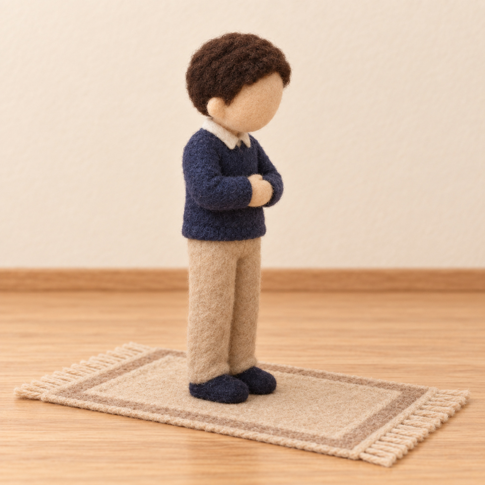
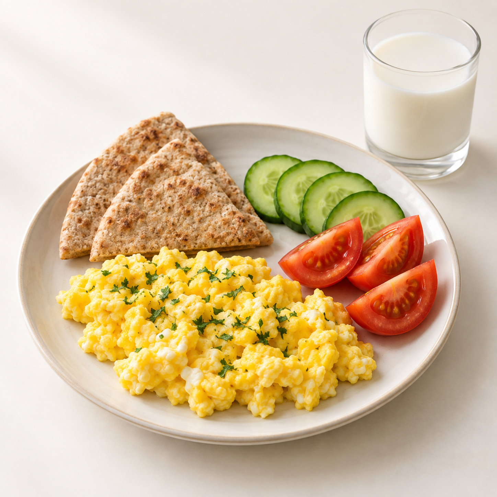
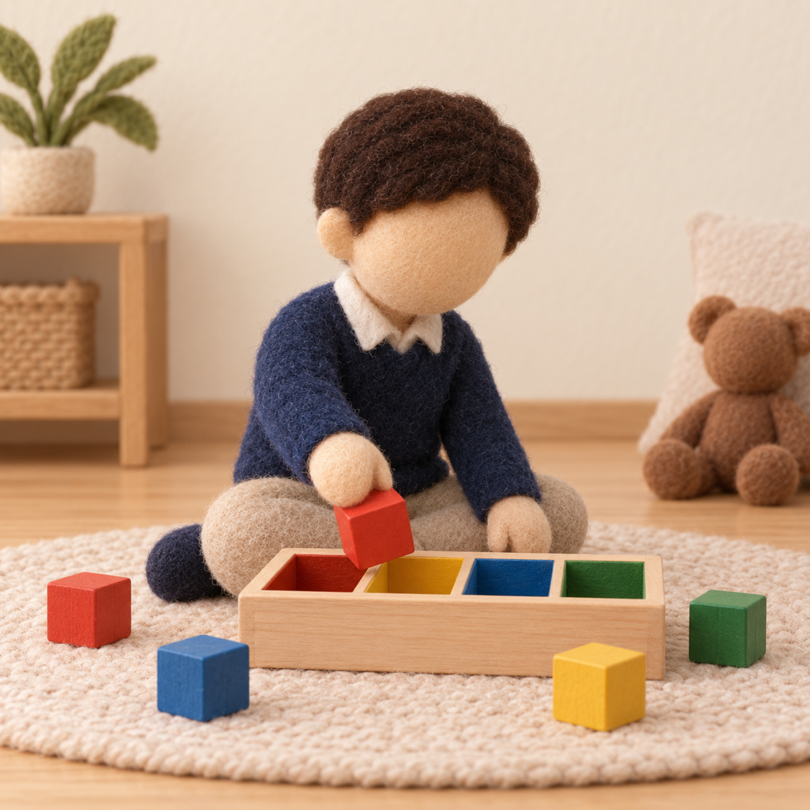
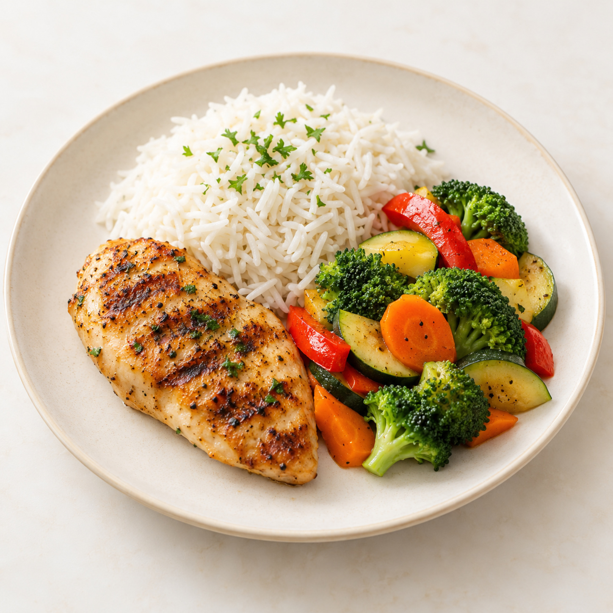
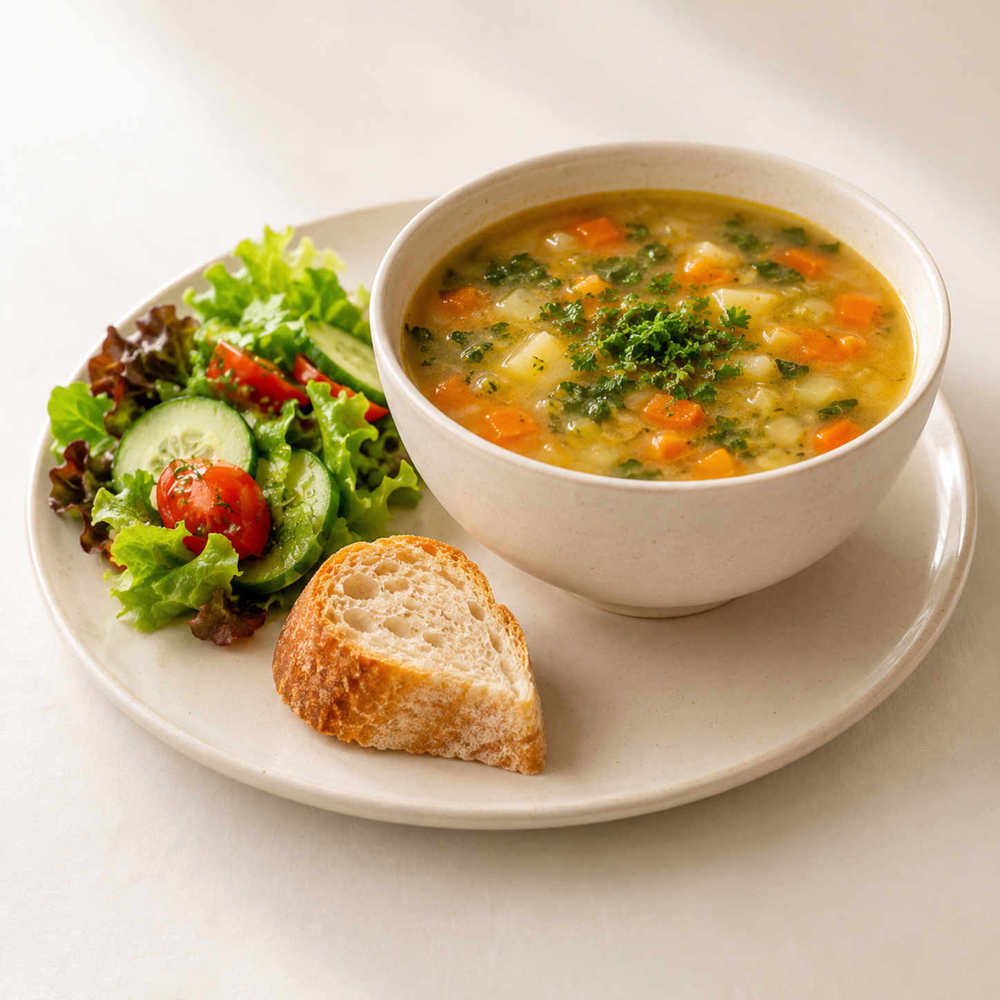
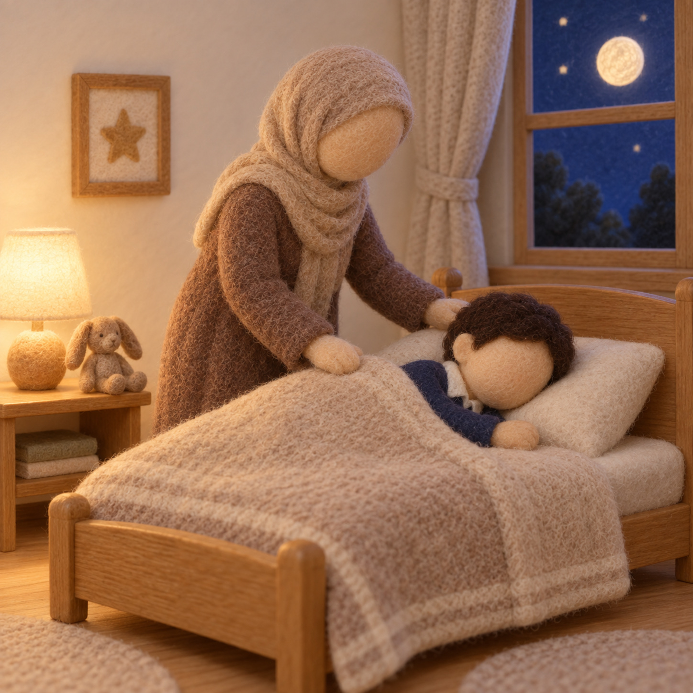

ترتيبُ روتين اليوم في المسكن
وحدة المسكن · مركز الرياضيات — مفهوم الوقت · ترتيبُ روتين اليوم
طريقة العمل: اقصصي بطاقات أحداث اليوم وتُخلط، ويرتّبها الطفل على الشريط أدناه من الاستيقاظ إلى النوم. مع كل بطاقة يذكر ما قبلها وما بعدها، ويربط الوقت بعملٍ نافع في بيته. نختم: ننظّم يومنا في المسكن بالتسلسل ونعمره بالخير.
صورة: الاستيقاظ
أستيقظ

صورة: وضوء وصلاةوضوءٌ وصلاة

صورة: فطورفطورٌ صحّي

صورة: تعلّم ولعبتعلّمٌ ولعب

صورة: غداءغداءٌ مع أهلي
 صورة: مساعدة
صورة: مساعدةأساعد أهلي

صورة: عشاءعشاءٌ خفيف

صورة: النومنومٌ مبكّر
شريطُ الترتيب — من الاستيقاظ إلى النوم
١
←
٢
←
٣
←
٤
←
٥
←
٦
←
٧
←
٨
الخلاصة: ننظّم يومنا في المسكن بالتسلسل ونميّز قبل وبعد، ونربط كلَّ وقتٍ بعملٍ نافع. — للمعلمة: نشاطٌ تطبيقيٌّ بعد الدرس لمجموعةٍ صغيرة (٤–٦)، وثّقي استقلال الطفل دون تحويله إلى اختبار.
دليل معلمة غرس القيم · بطاقات ترتيب روتين اليوم — مركز الرياضيات · ركن أدرك وأستمتع